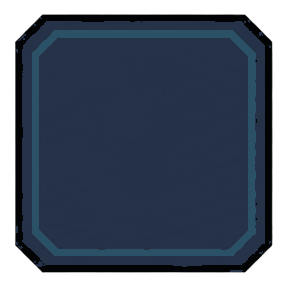
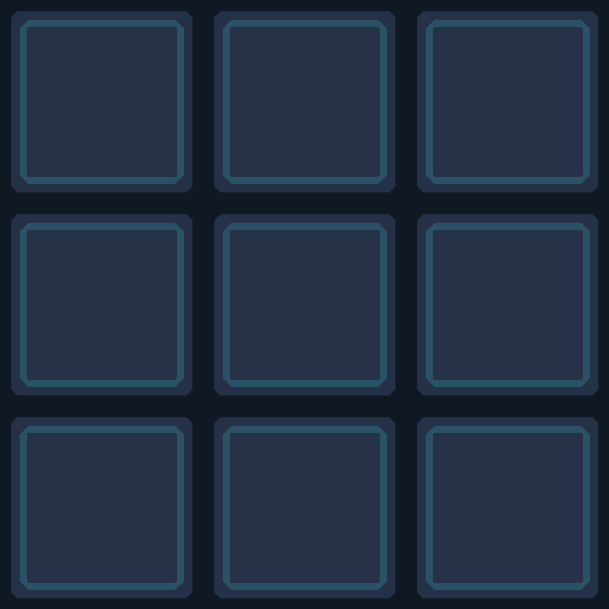
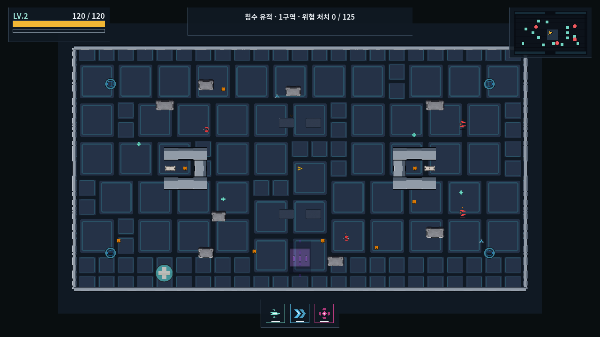
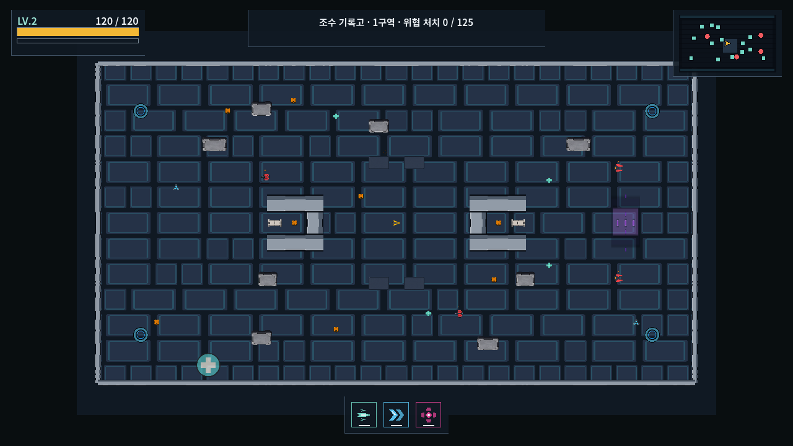
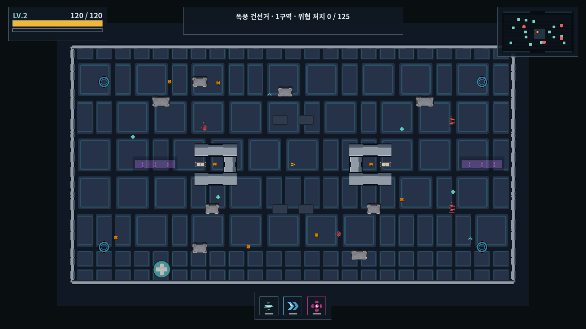
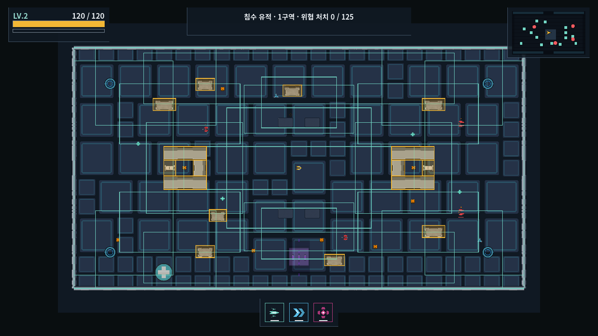

← 전체 Visual Replacement Workbench
Minimal World Map v3
맵을 만드는 시각 요소를 최소한의 완성형 PNG로 정리한 최종 적용 보고서입니다. Floor는 기존 디자인을 유지했고, wall은 선택한 TO-BE를 적용했습니다. Service rail과 장판 위의 중복 코드 오버레이는 제거했습니다.
FLOOR · KEPT
AS-IS 디자인 유지투명·오염된 가장자리만 복구
WALL · APPLIED
TO-BE PNG 적용경계벽과 내부 구조벽 모두 재사용
SERVICE RAIL · REMOVED
에셋·코드 모두 폐기게임플레이 역할 없음
FACILITY PAD · CLEAN
원형 PNG 한 장만 표시링·원·타이머 조각 제거
1. Floor — redesign 없이 edge만 수정


2. Wall — 하나의 TO-BE를 모든 고정 벽에 재사용
안 보이던 벽의 원인은 에셋 누락이 아니라 MultiMesh 배치를 늘릴 때 이전 transform이 초기화되던 코드였습니다. 모든 벽 transform을 먼저 모은 뒤 한 번만 배치를 생성하도록 수정했습니다.
3. Facility pads — 완성형 원형 PNG만 표시
기존에 장판 위에 겹쳐 그리던 반투명 disk, ring, 8개 timer segment는 삭제했습니다. 이제 repair와 overdrive 모두 각각 하나의 완성형 이미지로만 표시됩니다.
4. Runtime result




5. 최종 map image set — 13 identities
| 그룹 | 남긴 이미지 | 정리 원칙 |
|---|---|---|
| Surface | surface_panel_9 | Floor master 1개 |
| Wall | wall_segment_9 | 경계·가로·세로 구조벽 공용 1개 |
| Cover | terrain_solid_cover_block | 고정 cover 1개 |
| Bulkhead | intact, damaged, open | 게임 상태가 달라 3개 유지 |
| Wear terrain | intact, cracked, collapsed | 충돌 상태 변화가 달라 3개 유지 |
| Facilities | repair, overdrive, transit, arc surge | 게임플레이 기능별 완성형 PNG 4개 |
합계 13개. Service rail, support timer segment, 장식 전용 rail metadata는 최종 세트에 포함되지 않습니다.